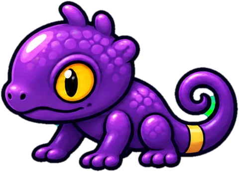

Tap a stage to read its story.
Graxlet is a plump purple gecko no bigger than a fist, with wide golden eyes that catch every flicker of light in the dark tunnels. Its smooth violet body has subtle ridges along the back, and its thick tail curls with nervous energy. It clings to cave walls by tiny adhesive toes and licks the air to taste traces of visitors before they know it is there. In the shadow caves, Graxlet is the first sign that deeper, older things are watching.
Field note: Graxlet tastes the air with a forked tongue flick every three seconds, even while asleep.
Shadow Caves. Graxlet and its family are found in the Shadow Caves. See everyone who lives there.
Share a Bond Food that matches its types to become friends. Graxlet loves:
A Bond Food is not a trick. It joins your spirit with the Kimuro's spirit, and only when it chooses you.
Print the Kimuro adventure packs: mazes, cards, a board game and Bond Mark medals.
See the printable packs